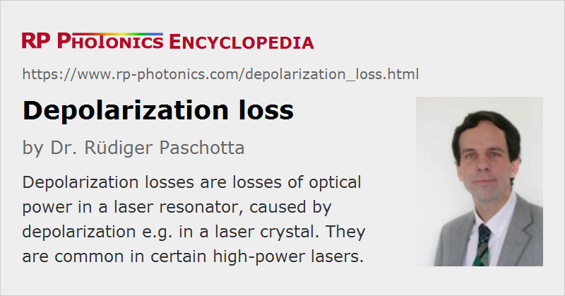

Depolarization Loss
Definition: losses of optical power in a laser resonator, caused by depolarization e.g. in a laser crystal
German: Depolarisationsverluste
How to cite the article; suggest additional literature
Author: Dr. Rüdiger Paschotta
Thermal effects in a gain medium of a high-power laser can cause significant power losses through depolarization, if a gain medium without intrinsic birefringence is used and the laser resonator contains an element with high losses for one of the polarization directions (e.g. a Brewster plate). The reason for this is that the temperature gradients in the gain medium induce mechanical stress and thus some amount of birefringence, with the direction of the local axis varying over the beam cross-section. (The birefringence axes are often oriented in the radial and tangential direction.) As a result, an originally linear polarization state is distorted, so that losses can occur at a polarizing intracavity element.
Thermally induced depolarization is suppressed if the gain medium has a sufficiently strong natural birefringence, so that the birefringent axis can not be significantly rotated by thermal effects. This is the case, e.g., in Nd:YVO4 lasers. For optically isotropic gain media such as Nd:YAG, thermal depolarization loss can be minimized, e.g. by using a Faraday rotator [1], a λ/4 plate in the laser resonator [4], or by arranging the laser resonator for a Gouy phase shift of suitable magnitude [7]. The basic idea behind such compensation methods is to create a situation where depolarization from different passes through a gain medium cancel each other at least partially. Depolarization losses can also be reduced by using a YAG crystal with optimized cut direction [6, 8].
Questions and Comments from Users
Here you can submit questions and comments. As far as they get accepted by the author, they will appear above this paragraph together with the author’s answer. The author will decide on acceptance based on certain criteria. Essentially, the issue must be of sufficiently broad interest.
Please do not enter personal data here; we would otherwise delete it soon. (See also our privacy declaration.) If you wish to receive personal feedback or consultancy from the author, please contact him e.g. via e-mail.
By submitting the information, you give your consent to the potential publication of your inputs on our website according to our rules. (If you later retract your consent, we will delete those inputs.) As your inputs are first reviewed by the author, they may be published with some delay.
Bibliography
| [1] | W. C. Scott and M. de Wit, “Birefringence compensation and TEM00 mode enhancement in a Nd:YAG laser”, Appl. Phys. Lett. 18, 3 (1971), doi:10.1063/1.1653466 |
| [2] | H. J. Eichler et al., “Thermal lensing and depolarization in a highly pumped Nd:YAG laser amplifier”, J. Phys. D: Appl. Phys. 26, 1884 (1993), doi:10.1088/0022-3727/26/11/008 |
| [3] | M. P. Murdough and C. A. Denman, “Mode-volume and pump-power limitations in injection-locked TEM00 Nd:YAG rod lasers”, Appl. Opt. 35 (30), 5925 (1996), doi:10.1364/AO.35.005925 |
| [4] | W. A. Clarkson et al., “Simple method for reducing the depolarization loss resulting from thermally induced birefringence in solid-state lasers”, Opt. Lett. 24 (12), 820 (1999), doi:10.1364/OL.24.000820 |
| [5] | R. Fluck et al., “Birefringence compensation in single solid-state rods”, Appl. Phys. Lett. 76 (12), 1513 (2000), doi:10.1063/1.126080 |
| [6] | I. Shoji and T. Taira, “Intrinsic reduction of the depolarization loss in solid state lasers by use of a (110)-cut Y3Al5O12 crystal”, Appl. Phys. Lett. 80 (17), 3048 (2002), doi:10.1063/1.1475365 |
| [7] | J. J. Morehead, “Compensation of laser thermal depolarization using free space”, JSTQE 13 (3), 498 (2007), doi:10.1109/JSTQE.2007.896616 |
| [8] | O. Puncken et al., “Intrinsic reduction of the depolarization in Nd:YAG crystals”, Opt. Express 18 (19), 20461 (2010), doi:10.1364/OE.18.020461 |
| [9] | W. Koechner, Solid-State Laser Engineering, 6th edn., Springer, Berlin (2006) |
See also: thermal lensing, birefringence, high-power lasers, polarization of light
and other articles in the category lasers
|  |
If you like this page, please share the link with your friends and colleagues, e.g. via social media:
These sharing buttons are implemented in a privacy-friendly way!